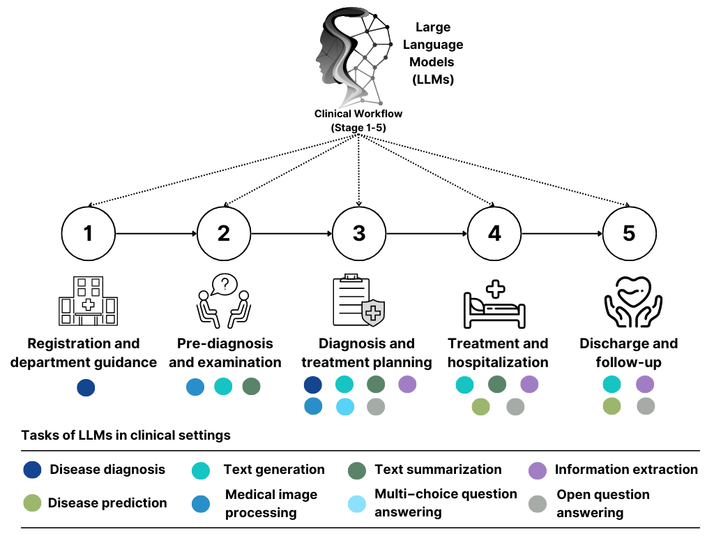

We collected and recorded basic information about 203 large language models (LLMs) in the medical domain and their fulfillment of various clinical tasks. By considering a five-stage clinical workflow, we provide some recommendations for the clinical integration of LLMs. Emphasis is placed on our development of a clinical LLMs selection tool, which is designed to provide evidence-based guidance to medical practitioners in identifying the LLMs that are best suited to their specific needs.
Five-stage clinical workflow
We considered a patient-oriented clinical workflow, with numbers I-v representing various stages where LLMs may be applied. Tasks of LLMs are represented by colored discs.

Clinical LLM Selection Tool
Welcome to the Clinical LLM Selection Tool! This tool will help a wide range of medical practitioners identify the medical LLM that is best suited to your specific needs. By answering a few questions, we will provide you with tailored LLM advice and the resources you need to get started. All of the information provided is derived from our review paper: Implementing Large Language Models in Healthcare: A Clinician's Review.
Currently our clinical LLMs selection tool is only open for Stages II-V. From the review we authored, we found that there was only one clinical application of LLMs for Stage I, so we were unable to create a similar tool for Stage I.
Click the `Guidelines' button below to read the Clinical LLM Selection Tool Guidelines.
Next, click on the button corresponding to the stage of the clinical workflow where the task you need to complete is located. Stage II is pre-diagnosis and examination, stage III is diagnosis and treatment planning, stage IV is treatment and hospitalization and stage V is discharge and follow-up.